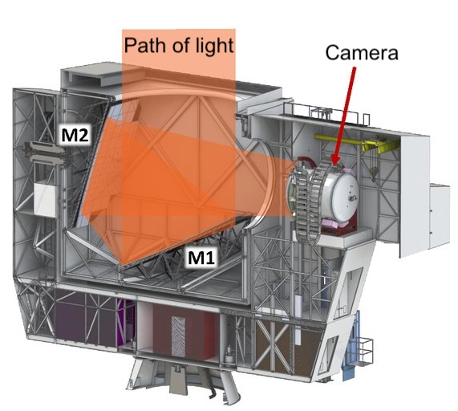
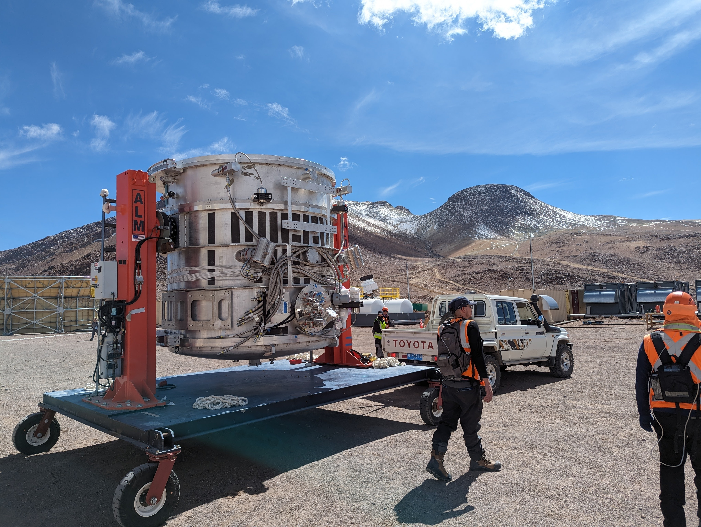
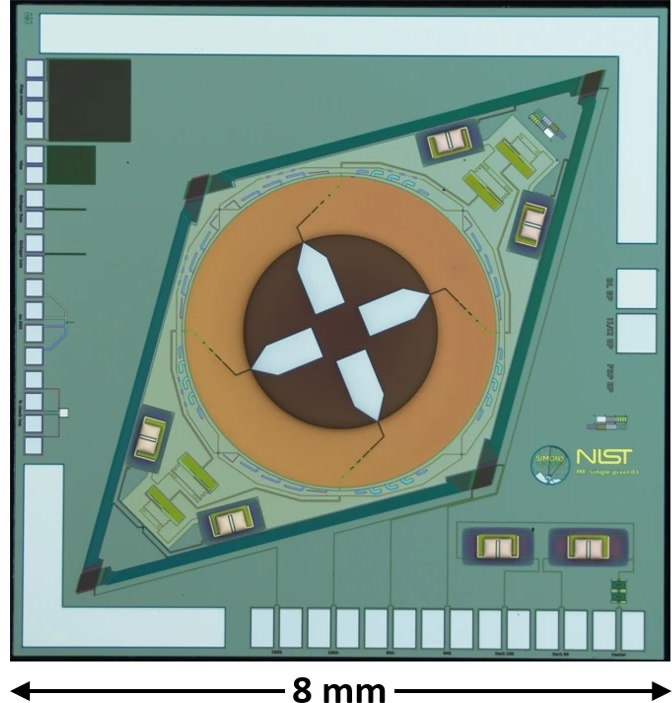
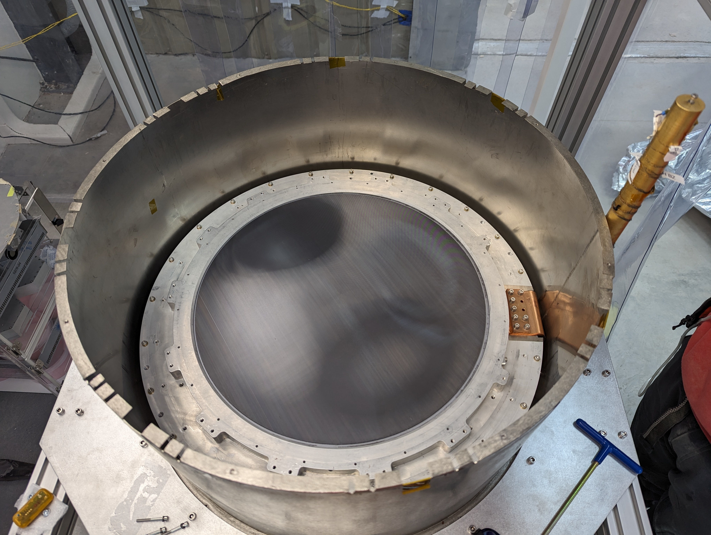
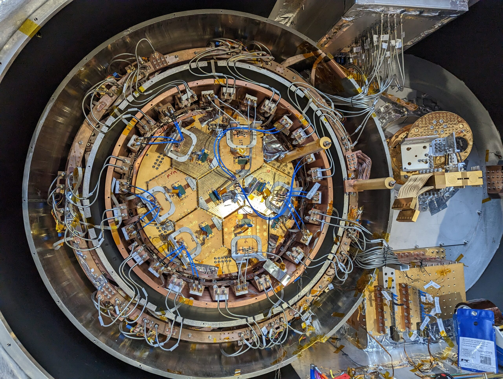
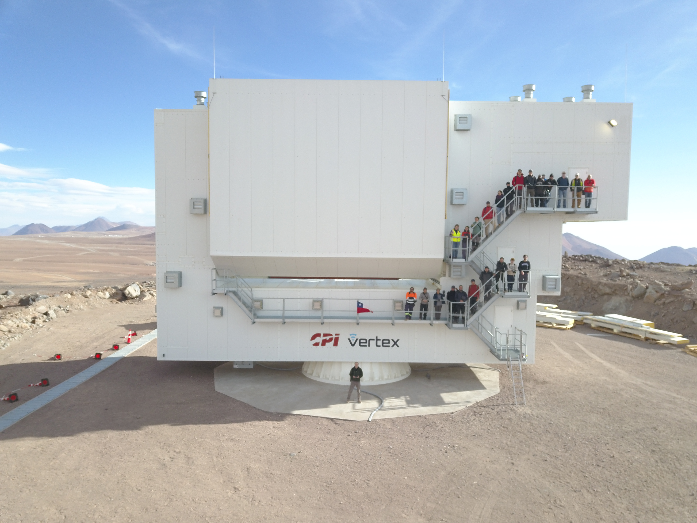
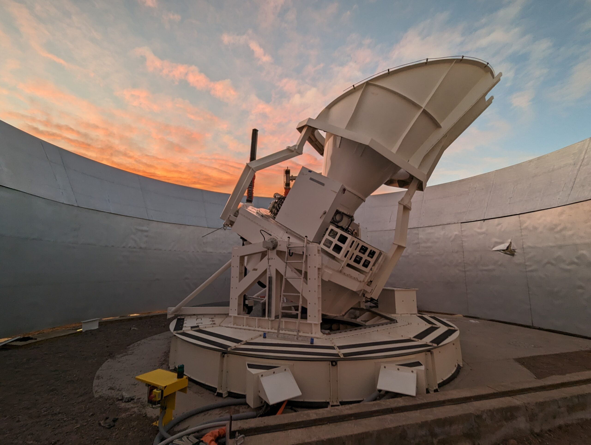

Anatomy of a microwave telescope
Telescopes designed to observe the sky at microwave frequencies have many similarities with visible light telescopes!
- They use lenses and/or mirrors to focus the light.
- They use cameras to make images of that light.
- Making "color" images requires imaging at multiple chanels

Really cool!
The CMB is very cold 2.7 Kelvin or -270 Celsius or -456 Fahrenheit!
To observe it our instrument needs to be cooled continously below that temperature!
In fact we cool our camera to a breezy 0.1 mK!!

Not your usual camera!
How do we measure the amount of incoming microwaves?
With a fancy thermometer!
Incoming microwaves are captured by tiny antenna and then heat a superconducting absorber.
The heating changes the resistance of superconductor so more microwaves means more resistance.

Meta!
A optical lens does not focus microwaves!
And microwave lenses are not typically transparent to visible light!
SO scientists careful design the materials to achieve the desired properties (known as metameterial)

Circuit Wizardry!
In total SO will have more than 100,000 detectors
That's a lot of wires to track
SO scientists have developed new technology to read out these detectors in a fast and reliable manner

The big telescope- AKA the LAT
High resolution microwave observations require massive telescopes
SO's large aperature telescope is designed for studying small details of the CMB
We not only want fine details, but we want see large areas. This means a huge 2.8m diameter camera!
The whole telescope rotates to scan the sky - a complex engineering challenge!

The senistive ones- AKA the SATs
One of SO's goals is to search for signals from the early Universe
These signals are predicted to be large (roughly the size of the moon), but tiny
To observe these the SO has small aperature telescopes
These are smaller, so can't see fine details, but are incredibly sensitive so idea for primordial searches

How do we measure the CMB?
Tradiational telescopes directly take photographs of areas of the sky. Microwave telescopes can not do that as the CMB is very faint and diffuse, and we have large sources of noise. Instead they record a time stream of temperature in each sky direction while moving across the sky. This is repeated thousands of times and then clever alogirthms combine these samples to reconstruct an image of the sky..
Design a set of CMB observations!
Now we bring all these pieces togther. Design a telescope and an observing pattern to map out our logo!
Draw a scan pattern over the sky patch with your mouse or finger, then we make a mock observational time streams and try to recover the true sky.
Here are the options:
- Resolution: what angular scale can the telescope resolve?
- Focal plane size: how much of sky does the telescope see?
- Number of scans: how many times do we trace out your chosen path?
- Mapmaking method: converting the time stream to the map effectively is hard! See how changing the analysis method can impact your measurement
- White-noise level, low frequency noise knee and 1/f slope: Sources of noise obscure our signal and come from many places. These control a few key levels. How does noise impact your measurement?
1. Draw a scan path
Hold the mouse button down and sketch the route you want the telescope to follow.